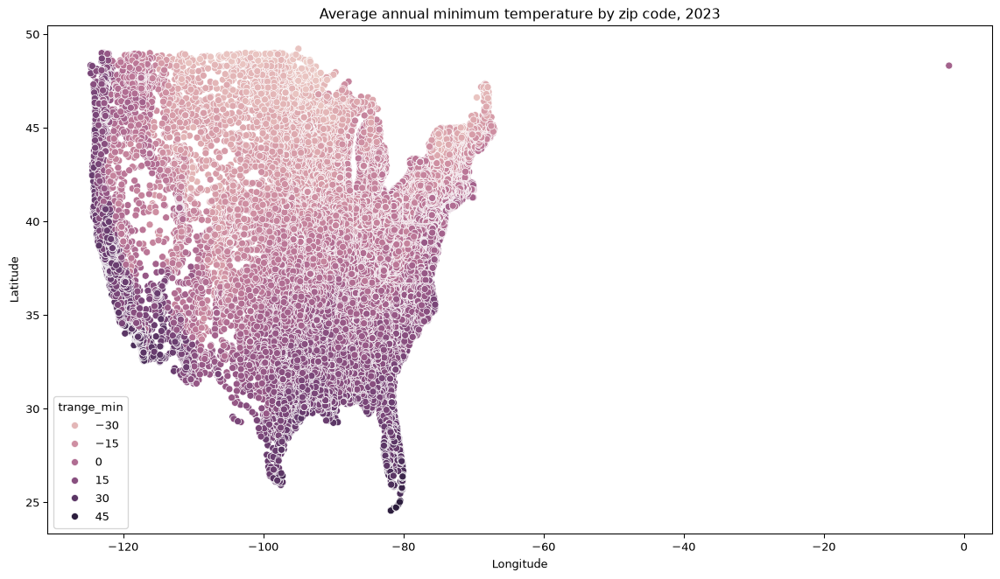
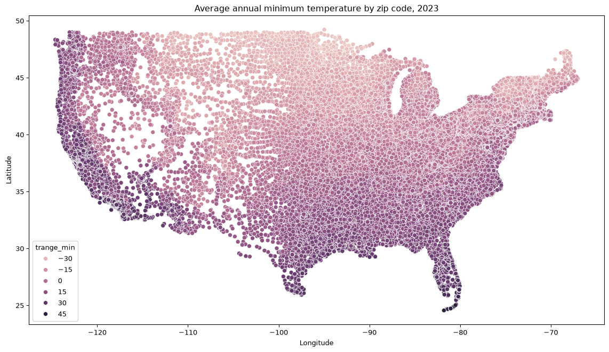
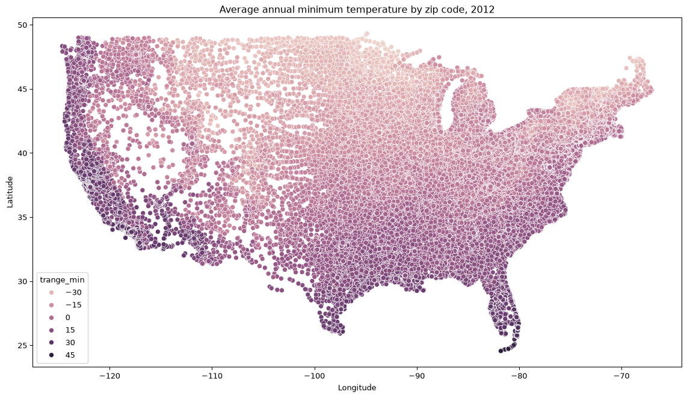
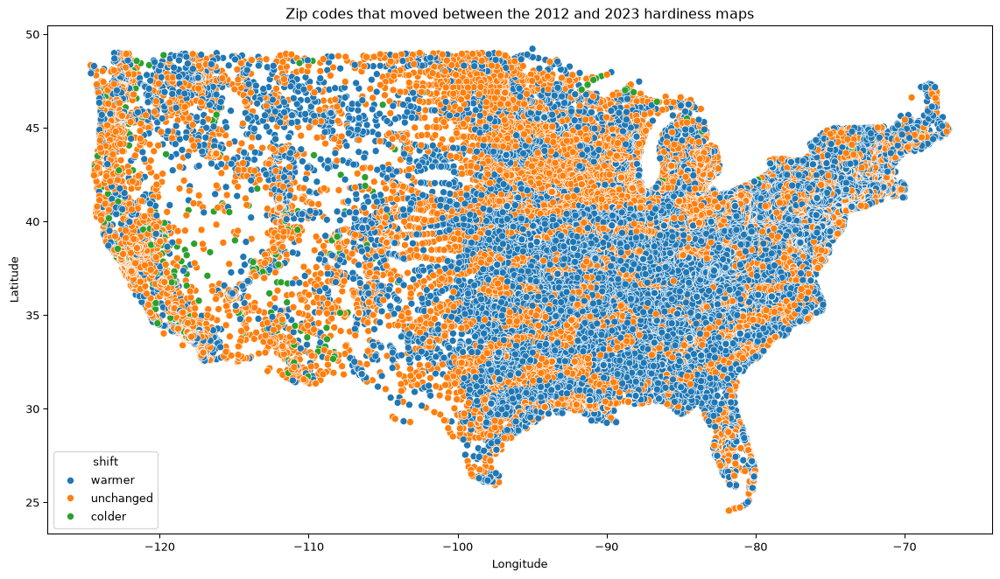
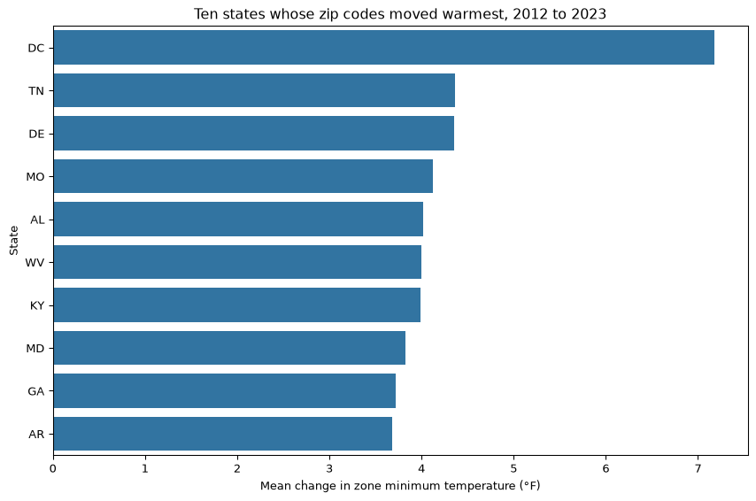

Work the exercise first, then come here. The code below is one correct answer, not the only one. If your code looks different but produces the same numbers, you were right.
The written answers matter more than the code. You can already tell whether your code ran. What you cannot check on your own is whether you read the result correctly, and that is what the green Answer boxes are for. Compare your markdown cells against them.
2012 is 40,534 rows by 4 columns, 2023 is 39,921 by 4, and the zip code database is 42,522 by 16. The two zone tables have exactly the same four column names, zipcode, zone, trange and zonetitle, in the same order, which is what makes stacking them safe in question 4. The zip code database is a different kind of file: many more columns, and one row per zip code rather than one row per zip code per map.
2. Run .isnull().sum() on both zone tables. Then look at .head() of either one and say, in one sentence, what zone, trange and zonetitle each hold and which of the three is redundant.
zipcode 0
zone 0
trange 0
zonetitle 0
dtype: int64
zipcode zone trange zonetitle
0 00501 7b 5 to 10 7b: 5 to 10
1 00544 7b 5 to 10 7b: 5 to 10
2 01001 6b -5 to 0 6b: -5 to 0
3 01002 6a -10 to -5 6a: -10 to -5
4 01003 6a -10 to -5 6a: -10 to -5
✅ Answer
No nulls anywhere in either file, in any of the four columns. zone is the short label (6a), trange is the five-degree temperature range that label stands for (-10 to -5), and zonetitle is the two of them pasted together with a colon (6a: -10 to -5), so zonetitle tells you nothing that is not already in the other two columns and is the redundant one.
A file with zero nulls is worth a moment of suspicion rather than relief. It usually means every row was assigned a value by a model, which is exactly what happened here: PRISM interpolated a continuous temperature surface and then read a value off it for every zip code. Nothing was left blank because nothing was measured at the zip code.
3. The two files do not have the same number of rows. Before you do anything else, write down two different explanations for that which do not involve anybody making a mistake.
Two explanations that involve nobody making a mistake:
The zip code system itself changed. USPS retires zip codes and creates new ones continuously, so eleven years apart the two files are describing two slightly different lists of places. This is the larger effect here: 635 zip codes appear in 2012 and not in 2023, while 22 appear in 2023 and not in 2012.
The two maps were built by different methods. The 2023 map used a different station network, a finer grid and a longer normals period, so a zip code that could be assigned a value under one procedure need not be assignable under the other.
The important consequence comes later: the 2012 file covers a partly different set of locations from the 2023 file, so any comparison of the two whole files compares two different populations. Question 6 does exactly that, and question 17 is where you find out what it cost.
Part 2: One table out of three
4. Add a year column to each zone table, then stack the two of them into one table called zones, using the stacking pattern. How many rows?
80,455 rows and 5 columns, which is 39,921 plus 40,534 exactly. pd.concat stacked the rows and nothing was dropped or merged, because the two tables had identical column names. The year column is what makes the stack usable: without it the two halves would be indistinguishable once they were in the same table.
5. Add trange_min using the line from the Field Note, then confirm it has no nulls and look at its distinct values with .value_counts().sort_index(). In a markdown cell, say what you notice about the spacing of those values and what that means for the phrase “how much warmer”.
Zero nulls, and only 18 distinct values, every one of them a multiple of five, running from -40 °F to 45 °F with no gaps and no value in between. There is no zip code at -12 or at 3, because no such label exists.
That spacing is a property of the map and not of the country. trange_min is the cold edge of a five-degree bin, so it is a label, not a measurement. The phrase “how much warmer” can therefore only ever be answered here in whole multiples of five degrees, and the honest reading of any difference you compute is “this place crossed a zone boundary”, not “this place warmed by five degrees”. Hold on to that sentence: it is what questions 18 and 22 are about.
6. Compute the mean trange_min for each year and report the difference. This is the headline number, and you are about to spend the rest of the practice finding out how much it is worth.
Code
means = zones.groupby('year')['trange_min'].mean()print(means.round(3))print(round(means[2023] - means[2012], 3))
year
2012 -1.900
2023 1.017
Name: trange_min, dtype: float64
2.917
✅ Answer
The mean zone minimum is -1.900 °F in 2012 and 1.017 °F in 2023, a difference of 2.917 °F.
Two things are wrong with that number as a headline. First, it is a mean of bin labels, and no place in the file warmed by 2.917 °F, because 2.917 is not a value any zip code can take. Second, it compares two different sets of zip codes, since 635 zip codes are in the 2012 file only. The paired version, computed over the 39,858 zip codes present in both files, is 2.884 °F in question 17’s table. The two agree closely here, which is the reassuring case, but you only know that because you checked.
7. Merge zones with zipcodes to attach a state, a latitude and a longitude to every row. The key columns are called different things in the two tables. Compare the row count before and after, then run the merge again with how='left' and find out how many rows failed to match and how many distinct zip codes that is.
80,455 rows went in and 80,352 came out, so 103 rows were lost, covering 63 distinct zip codes. The default merge is an inner join, so a zone row whose zip code is absent from the zip code database is silently discarded. The how='left' version is how you make the loss visible: every row survives, and the ones that failed to match are exactly the rows where zip is null.
Note that 103 rows over 63 zip codes means most of those zip codes were lost twice, once in each year. Comparing the row count before and after is the cheapest habit in this whole exercise, and it is the one that catches a merge that quietly deleted a tenth of your data.
8. In a markdown cell: 103 rows out of 80,455 did not match, covering 63 zip codes. Is that a number you would fix, a number you would mention, or a number you would ignore? Say which and why. There is more than one defensible answer.
Mention it, do not fix it. 103 rows is 0.13 percent of the file, so no result in this notebook can turn on them, and hand-repairing 63 zip codes would take an hour and introduce errors of your own. But you say so in a sentence, because a reader who recomputes your numbers from the raw files should not have to discover the gap themselves.
Printing the codes is what makes the decision defensible rather than lazy. Eleven of the 63 are in the 56900 block, which USPS assigns to federal agencies in Washington DC, and one is 88888, the novelty code for Santa Claus at the North Pole. These are administrative codes and post office box ranges, not towns with gardens in them, so losing them costs the analysis nothing. Had the 63 been a contiguous block of rural counties in one state, the same 0.13 percent would have needed fixing. Whether a loss matters depends on what was lost, not on how large it is.
Part 3: The first map
9. Filter located to the 2023 rows only, then draw a scatter plot with longitude across the bottom, latitude up the side, and hue='trange_min'. Make the figure twelve inches by seven. Label both axes and title it.
Code
recent = located[located['year'] ==2023]plt.figure(figsize=(12, 7))sns.scatterplot(data=recent, x='longitude', y='latitude', hue='trange_min')plt.xlabel('Longitude')plt.ylabel('Latitude')plt.title('Average annual minimum temperature by zip code, 2023')plt.tight_layout()plt.show()

10. Something is wrong with that figure, and it is not subtle. Describe it in a markdown cell.
✅ Answer
The whole country is crushed into the left-hand 40 percent or so of the figure, and one lone point sits by itself out at the right, near longitude 0. The x-axis runs from about -125 to 0 because seaborn scaled it to fit every point it was given, and the single point at -2.12 dragged the right edge sixty-five degrees past the coast of Maine.
Nothing is wrong with the colours, the y-axis or the rest of the data. One value in one column set the scale for the entire figure.
11. Find the culprit. Use the filter pattern on located to pull out every row with a longitude greater than −60, and print its zip code, state, city, latitude and longitude.
12. In a markdown cell, two or three sentences. That is one zip code, appearing once in each year: two rows out of eighty thousand. Look up roughly where latitude 48.3, longitude −2.1 is. Is the temperature reading wrong, or is something else wrong? And say plainly what those two rows did to your figure.
✅ Answer
Zip code 22350, Alexandria, Virginia, recorded at 48.31 N and 2.12 W, which is in Brittany, in northwestern France. Alexandria is at roughly 38.8 N, 77.0 W, so the latitude is off by about ten degrees and the longitude by about seventy-five. The error is in the coordinates, which came from the zip code database, and not in the temperature: 22350 is zone 7b, 5 to 10 °F, which is an ordinary reading for the Washington DC suburbs.
What those two rows did is set the scale. They added no visible information to the figure and they took away most of its resolution, because every other point had to share the remaining 40 percent of the axis. The general problem is this: a single bad value in a column you are plotting on damages every point in the figure, not just its own.
Notice also what would not have caught it. The row is not null, not duplicated, not the wrong dtype, and .describe() on longitude reports a maximum of -2.12 with no comment. It survives every cleaning step from Thursday. The figure found it in one second, because a plot is the only summary of a dataset that gives an outlier as much room as it gives everything else.
13. Build a table called usa holding only the rows with longitude less than −60, and redraw the 2023 map from it. Then draw the same map for 2012.
Code
usa = located[located['longitude'] <-60].copy()plt.figure(figsize=(12, 7))sns.scatterplot(data=usa[usa['year'] ==2023], x='longitude', y='latitude', hue='trange_min')plt.xlabel('Longitude')plt.ylabel('Latitude')plt.title('Average annual minimum temperature by zip code, 2023')plt.tight_layout()plt.show()plt.figure(figsize=(12, 7))sns.scatterplot(data=usa[usa['year'] ==2012], x='longitude', y='latitude', hue='trange_min')plt.xlabel('Longitude')plt.ylabel('Latitude')plt.title('Average annual minimum temperature by zip code, 2012')plt.tight_layout()plt.show()


14. You have just drawn a recognizable map of the United States without a mapping library, a projection, or a shapefile. In a markdown cell, one sentence on why that worked here. Then one more: run usa['state'].nunique() and say which parts of the country are not in these files at all.
It worked because latitude and longitude are just two numbers, and 40,000 points are enough to show the outline of the country. A scatter plot of longitude against latitude is already a map at this density, since the country’s shape is visible in where the zip codes are and where they are not. The reason nobody uses this in production is that it is unprojected: distances and areas are distorted, and the further north you go the more the map is stretched sideways. For looking at your own data on the way to an answer, that does not matter.
49 states, which is the 48 contiguous states plus the District of Columbia. Alaska and Hawaii are absent, and so is Puerto Rico, along with the other territories. That matters more than it looks: the hardiness zones only run from 1a to 13b because of Alaska at one end and Puerto Rico at the other, and neither end of that scale is in these files. Anything you say here is a statement about the lower 48.
15. Put the two maps side by side on your screen and try to see the difference between them. In one honest sentence: can you?
✅ Answer
No. The two figures are the same picture: the same colour gradient from the Canadian border to the Gulf, the same mountains showing as cold streaks in the west, the same warm Florida. The change, where it exists, is one bin on an eighteen-bin colour scale at a handful of percent of the points, and no eye can pick that out of 40,000 overlapping markers by flipping between two images. If you thought you saw a difference, you were seeing the difference you expected.
Part 4: What actually changed
16. Use the pivot pattern to build a table with one row per zip code and one column per year. Index it on ['zipcode', 'state', 'latitude', 'longitude'], put year across the columns and trange_min in the cells, then .reset_index(). What shape is it, and why is that number smaller than 80,000?
40,492 rows and 6 columns. It is roughly half of 80,350 because the pivot changed what a row means. In usa a row was one zip code in one year, so nearly every zip code had two rows. In change a row is one zip code, with the two years side by side as columns, which is the shape you need to subtract one from the other.
40,492 is the union of the two years’ zip codes, not the intersection, which is why it is slightly more than either file on its own. The pivot did not throw away the zip codes that appear in only one year: it gave them a row with a hole in it, and that hole is question 17.
17. Add a temp_diff column: the 2023 value minus the 2012 value. Count its nulls and say what a null means here. Then drop those rows.
634 nulls, leaving 39,858 zip codes with a difference. A null here does not mean a missing measurement. It means the zip code exists in one map and not the other, so there is nothing to subtract, and it is the row-count mismatch from question 3 arriving in a new form. Almost all of them, 632 of the 634, are zip codes that were in the 2012 file and are not in the 2023 file.
Dropping them is right, because a difference cannot be computed for them, but notice what you have just done: every number in the rest of this notebook describes the 39,858 zip codes that were mapped both times. That is a slightly different country from the one in question 6, and it is why the paired mean change is 2.884 °F rather than 2.917 °F.
18. Draw a histogram of temp_diff. Label it. Then print change['temp_diff'].value_counts().sort_index() and read the two together. In a markdown cell, three or four sentences: what is the most common value, what is the second most common, and how many distinct values are there in total? Given that, is temp_diff a measurement of how much a place warmed, or is it something else? Be precise.
Code
plt.figure(figsize=(9, 5))sns.histplot(data=change, x='temp_diff')plt.xlabel('Change in zone minimum temperature, 2023 minus 2012 (°F)')plt.title('How zip codes moved between the two maps')plt.tight_layout()plt.show()change['temp_diff'].value_counts().sort_index()
The most common value is +5 °F, on 22,374 zip codes, and the second is 0 °F, on 16,574. There are 11 distinct values in the whole column, every one of them a multiple of five, running from -30 to +25. Those two values alone cover 97.7 percent of the country. Everything else is a thin tail: 491 zip codes at +10, 363 at -5, and 28 or fewer at each of the remaining seven values.
So temp_diff is not a measurement of how much a place warmed. It is the number of five-degree zone boundaries a zip code crossed between the two maps, multiplied by five. A zip code reading +5 warmed by some unknown amount that happened to be enough to push it over the line it was nearest to, which could be a tenth of a degree if it sat at the edge of its 2012 bin. A zip code reading 0 also warmed, probably by a similar amount, and simply did not cross anything.
This is why the histogram matters more than the mean. The mean, 2.884 °F, is a real number that describes no zip code in the file, and it looks like a temperature. The histogram makes it impossible to forget that you are counting boundary crossings.
19. Use the top-N pattern twice to show the five zip codes with the largest increase and the five with the largest decrease, with their states and coordinates. In a markdown cell, two or three sentences: a zip code that moved by 25 or 30 °F has moved five or six whole zones. Do you believe that is a change in the climate? What else could produce it?
year zipcode state latitude longitude 2012 2023 temp_diff
38929 95604 CA 38.90 -121.06 0.0 25.0 25.0
25047 59761 MT 45.54 -113.54 -40.0 -20.0 20.0
36468 89008 NV 37.32 -114.53 0.0 15.0 15.0
25002 59701 MT 46.00 -112.44 -35.0 -20.0 15.0
34114 80442 CO 39.93 -105.79 -30.0 -15.0 15.0
year zipcode state latitude longitude 2012 2023 temp_diff
38736 95321 CA 37.85 -119.76 20.0 -10.0 -30.0
38967 95644 CA 38.45 -120.52 20.0 0.0 -20.0
38686 95223 CA 38.35 -120.20 15.0 -5.0 -20.0
35926 86435 AZ 36.15 -112.63 15.0 0.0 -15.0
35424 84779 UT 37.30 -113.08 10.0 -5.0 -15.0
✅ Answer
No. Every one of these ten is in high or steep terrain. The largest increase is 95604 in California, from 0 °F to 25 °F, in the Sierra Nevada foothills near Auburn; then 59761 in the mountains of southwest Montana at +20, and 37729 in the Tennessee Appalachians, 80442 in the Colorado Rockies and 83246 in southeast Idaho at +15. The largest decrease is 95321 in California, from 20 °F down to -10 °F, which is Groveland at the edge of Yosemite, and 95644 and 95223 at -20 are also in the Sierra Nevada. Three of the five largest decreases are Californian, and the other two are in Arizona and Utah.
Six zones in eleven years is a product of the modelling rather than of the climate. In steep terrain the temperature changes faster with a mile of horizontal distance than it does with a decade of time, so a zip code covering a canyon and a ridge has no single true value, and the 2023 map’s finer grid put its point on a different part of the slope than the 2012 map did. The zip code also has no real location: it is represented by one coordinate pair standing in for an area that can be several hundred square miles in the mountain west.
The practical rule is that the extremes of a difference between two models are usually telling you about the models. If the tails of your difference all come from the same kind of place, the place is the explanation.
20. Write a named function called classify_shift that takes one difference and returns 'warmer', 'colder' or 'unchanged', apply it to build a shift column, and count the three categories.
Code
def classify_shift(diff):"""Label a zone change as warmer, colder, or unchanged."""if diff >0:return'warmer'elif diff <0:return'colder'else:return'unchanged'change['shift'] = change['temp_diff'].apply(classify_shift)change['shift'].value_counts()
22,888 warmer, 16,574 unchanged, 396 colder, which is 57.4 percent, 41.6 percent and 1.0 percent of the 39,858 zip codes. “About half the country moved half a zone warmer” is a fair summary of that, and it is roughly what was reported in November 2023.
Collapsing eleven values into three loses the size of the move and keeps the direction, which is the right trade here, because the size was never a temperature in the first place. Three categories is also as many as hue= can show clearly on a 40,000-point map.
21. Draw the change map: longitude and latitude again, this time with hue='shift'. Twelve by seven, labelled, titled.
Code
plt.figure(figsize=(12, 7))sns.scatterplot(data=change, x='longitude', y='latitude', hue='shift')plt.xlabel('Longitude')plt.ylabel('Latitude')plt.title('Zip codes that moved between the 2012 and 2023 hardiness maps')plt.tight_layout()plt.show()

22. In a markdown cell, four or five sentences. Where is the country almost uniformly warmer? Where is it patchy? Where are the 'colder' points, and does their location connect to your answer to question 19? Then compare this figure with the two maps from question 13, and say in one sentence why the difference had to be computed rather than looked at.
✅ Answer
The eastern half of the country is mostly warmer and the western half is mostly not. East of longitude -100, 62.3 percent of zip codes moved warmer, with a mean change of 3.17 °F; west of it only 37.1 percent did, at 1.72 °F. The solid blue is in the mid-South and the Ohio valley and up the mid-Atlantic: Tennessee 4.37 °F over 774 zip codes, Missouri 4.12 over 1,142, Alabama 4.02, West Virginia 4.00, Kentucky 3.99, with four fifths of their zip codes moving.
The east is striped rather than uniform, and that is the most informative thing in the figure. Broad bands of “warmer” alternate with bands of “unchanged” running roughly parallel to the zone contours themselves, because whether a zip code crossed a line depends on where inside its 2012 bin it was sitting, and neighbouring zip codes sat at the same place in the bin. Those stripes are an artifact of binning and would not appear at all in a map of the underlying continuous temperatures.
The west is speckled rather than banded, and the 396 colder points are almost all there: 87.4 percent of them lie west of -100, with 175 in California alone and the rest in Utah, Arizona, Nevada, New Mexico, Colorado, Washington and Oregon. That is the same Sierra Nevada, Cascade and Great Basin terrain as question 19’s extremes, and for the same reason. In mountains the difference between the two maps comes from the modelling method rather than from the weather.
The difference had to be computed because it is one bin on an eighteen-bin scale for about half the points, and the eye comparing two 40,000-point maps cannot see a change that small, but it can see it instantly once the change is the only thing being drawn.
Part 5: States, and the count column
23. Group change by state and use .agg(['count', 'mean']) on temp_diff. Show the ten states with the largest mean increase.
24. Read the count column before you read the mean column. Two entries in that top ten should stop you. Name them and say why in one sentence each.
✅ Answer
The District of Columbia and Delaware.
DC, 7.18 °F over 275 zip codes, is not a state and is not comparable to one: it is 68 square miles of a single city, every one of its 275 zip codes moved warmer, and its mean sits 2.8 °F clear of the next entry because a mean over one small city covers about as much ground as one weather station. It belongs in a footnote, not in a ranking of states.
Delaware, 4.35 °F over 93 zip codes, has the second-smallest count of any state in the table, behind Rhode Island’s 88, so its mean is built from about a twenty-seventh of the zip codes behind Texas’s. That does not make 4.35 wrong, and Delaware is genuinely in the warm corridor, but a ranking that puts a 93-zip-code state next to an 1,142-zip-code state and calls them both observations is inviting the reader to treat them as equally solid. This is why you called .agg(['count', 'mean']) and not .mean().
25. Build a Series of the ten largest mean increases, sorted, and draw it as horizontal bars using the .values and .index idiom. Label both axes with units and title it.
Code
top_states = change.groupby('state')['temp_diff'].mean().sort_values(ascending=False).head(10)plt.figure(figsize=(9, 6))sns.barplot(x=top_states.values, y=top_states.index)plt.xlabel('Mean change in zone minimum temperature (°F)')plt.ylabel('State')plt.title('Ten states whose zip codes moved warmest, 2012 to 2023')plt.tight_layout()plt.show()

26. Now the other end. Show the five states with the smallest mean increase, with their counts. In a markdown cell, one or two sentences: one of those states has more zip codes in it than all but one other state in the file. Does that make its small number more trustworthy or less, and does it make the ranking more interesting or less?
Code
by_state.sort_values('mean').head(5).round(2)
count
mean
state
CA
2552
0.82
AZ
520
0.99
ND
404
1.00
IA
1042
1.20
UT
336
1.31
Code
# The answer compares California's count with the largest in the table, so put# the count column in front of us rather than reasoning about it from memory.by_state.sort_values('count', ascending=False).head(3).round(2)
count
mean
state
TX
2566
3.36
CA
2552
0.82
NY
2124
2.84
✅ Answer
California, 0.82 °F over 2,552 zip codes. Only Texas has more, at 2,566. California holds about 6 percent of the country’s zip codes, so its 0.82 °F is the best-supported number in the whole ranking, and it is far more trustworthy than DC’s 7.18 °F, not less. Small means are often noise, and this one is not: it is an average over 2,552 places, and it is small because 69.8 percent of California’s zip codes did not move at all and another 6.4 percent moved colder.
That makes the ranking more interesting rather than less. The top of the list is partly a story about which small states sit in the warm corridor, while the bottom of the list is a real finding about a large and topographically varied state that the 2023 map moved much less than it moved the Southeast. Arizona at 0.99 over 520, North Dakota at 1.00 over 404 and Utah at 1.31 over 336 point the same way: the mountain west and the northern plains moved least, and California’s low value comes with the strongest evidence behind it.
Part 6: Write it up
There is no single right answer here. A strong response cites at least three numbers you computed, names at least two distinct reasons the comparison is harder than it sounds, and ends by naming one figure. Here is one that would earn full marks.
✅ A model answer
I would send the change map from question 21 and the number 57.4 percent.
The map shows every zip code in the lower 48 coloured by whether it moved warmer, stayed put, or moved colder between the 2012 and 2023 hardiness maps, and 57.4 percent of the 39,858 zip codes that appear on both maps moved warmer. The headline is defensible as far as it goes: the mean zone minimum rose from -1.900 °F to 1.017 °F, a difference of 2.917 °F, and the warming is concentrated exactly where the story says, with Tennessee at 4.37 °F across 774 zip codes and Missouri at 4.12 across 1,142.
There are two things it does not mean. First, no place warmed by 2.917 degrees. The zone values come in five-degree bins, so the difference between the two maps takes only eleven values, all multiples of five, and 97.7 percent of the country is at either 0 or +5. A zip code that reads +5 crossed the line it was already nearest to, and one that reads 0 may have warmed almost as much without crossing anything. The number counts boundary crossings, not degrees. Second, the two maps were built by different methods eleven years apart, on a different station network and a finer grid, and where the terrain is steep that difference dominates. The extremes are the evidence: 95604 in the Sierra Nevada moved 25 °F and 95321 near Yosemite moved -30 °F, and every one of the ten largest movers in either direction is in mountains. Some of what this comparison measures is the improvement in the map.
Two more limits are worth a line. The files cover the 48 contiguous states and DC only, so nothing here speaks to Alaska or Puerto Rico. And a hardiness zone is built from the average annual coldest night, which is one statistic out of a climate: it says nothing about summer heat, drought or the timing of the last frost, all of which decide more about what a gardener can grow.
The figure to publish is the change map. The two individual year maps are indistinguishable by eye, which is the point.
Where the marks are
If you compare your notebook against this key, look for these four things before you look at anything else.
You never called temp_diff a temperature change. It is a count of five-degree boundary crossings, and eleven distinct values with 97.7 percent of the country at 0 or +5 is the evidence. Every other conclusion in the practice depends on getting this one right.
Your question 12 answer says the coordinates are wrong, not the temperature. Zip code 22350 is Alexandria, Virginia, plotted in Brittany. If your answer stops at “there is an outlier”, you have described the figure without diagnosing it.
Every mean in Part 5 has its count beside it, and you read the count first. DC’s 7.18 °F over 275 zip codes in one city and California’s 0.82 °F over 2,552 are the two entries that show why the ranking cannot be read straight down.
You compared the row count before and after the merge, and you said in a sentence what happened to the 103 rows and 634 nulls rather than letting pandas drop them quietly.